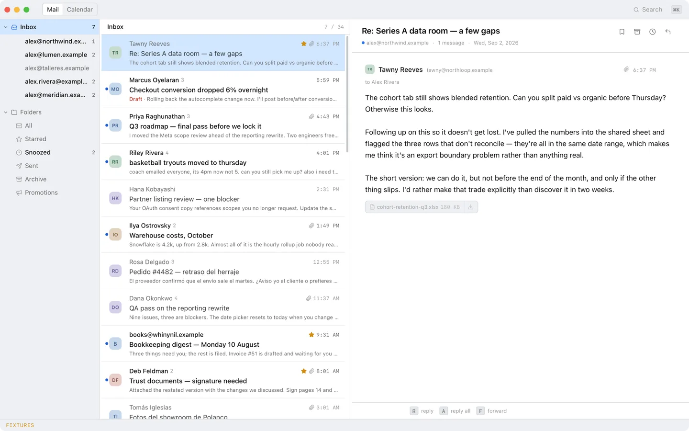
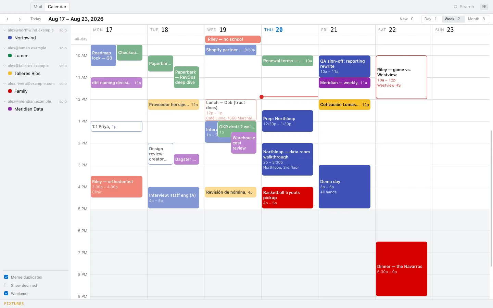

A fast Gmail and Google Calendar client for macOS.
I got tired of waiting on Gmail, so I wrote my own. All my accounts in one list, every key where Gmail put it, and an agent that can act on my mail instead of just describing it. Gmail and Google Calendar only — no IMAP, no other providers.

Everything you look at comes out of a SQLite database on your own disk. Opening a thread doesn't ask Google anything, so it happens the instant you press the key, and it still happens on a plane. Sync runs behind all of that and writes into the same database.
- Local data
- Twelve months backfilled per account, then incremental history sync from a stored watermark. Nothing on screen ever waits on Google.
- Search
-
Gmail's operator syntax, parsed as you type and compiled to SQL
against an FTS5 index.
from:,has:attachment,older_than:2m, quoted phrases,ORand-all work. Sixty-one thousand messages, and results land before you've let go of the key. - Keyboard
- Gmail's own, so there's nothing to learn twice. J K to move, E to archive, B to snooze, C to write, R to reply, G I for the inbox. ⌘K for search and commands, ? for the full list. ⌘Z undoes over a stack that does not expire.
- Several accounts
- One list, in date order, with a colour bar on each row telling you whose it is. Replies go out from the account the mail came in on, so you can't answer your mother from work by accident.
- Calendar
- Day, week and month, and you can drag to make an event or drag it somewhere else. Open one and you get the guests and who's actually coming, the recurrence rule, the reminders, and the Meet link.
- Attachments
- Fetched, cached, opened and saved, with inline images drawn in the message. What kind of file it is comes from the bytes themselves, not from what the sender claimed, and executables don't open.
- Notifications
- New mail gets a notification and a Dock badge, but only if it has earned one: unread, in the inbox, not from you, and either Gmail filed it as personal or it's a thread you've already written into. Newsletters stay quiet.
- An agent with real tools
- Every action in Mach is a typed command in Rust, and those same commands are the whole of what the agent can do — it has no back door the keyboard doesn't have. It runs on the Claude Code CLI if you have one, so it spends the subscription you're already paying for and never asks for an API key. Anything that actually leaves the building stops and waits for you to say yes. Everything else is undoable and shows up in the same log as the things you did yourself. ⌘K will also hand a thread off to an agent running somewhere else.
- Suggested replies
- Open a thread somebody's asked you something in and the reply bar offers two stances — say you'll wait, offer a call — with the whole reply already written behind each one. Press 1 and the composer opens with it in, cursor at the end, an ordinary draft from there. They're written against your own sent mail, so they sound like you rather than like a model, and they never leave your machine until you pick one — nothing lands in Gmail's drafts to be sent off your phone by accident. It counts how often you send one roughly as written, which is how you find out whether it's earning its keep.
- Unsubscribe
-
⇧⌘U on a newsletter archives it and unsubscribes in the
background. Most bulk senders support one-click now, so that's a
single request and no page; the rest get the unsubscribe email
sent for them. If all a sender offers is a link to a form, you get
a button that opens it — Mach won't click through a page it hasn't
read, and a request that only might have worked is worse
than one you did yourself.
It won't offer on anything with a link, either. Unsubscribing tells the sender your address is live and read, which is right for a newsletter and the worst possible move for spam — so mail that looks like spam gets offered the spam report instead. - Copy it for a chatbot
- ⌥⌘C puts whatever's on screen on the clipboard as plain text — the whole thread, quotes stripped, ready to paste into whatever you're asking. Or the week, or a search and its results.
- Plugins
- Somebody else's code runs in a sandbox with no network, no files and none of your Google credentials. All a plugin can do is send the same commands your keyboard sends, and only the ones you let it, which is also why ⌘Z takes its work back.

Ask from ⌘K and the answer comes back in a drawer under the list, with every tool it reached for and what came back, so you can see what it actually did rather than take its word for it.


I'm not planning to do any of it.
- No IMAP or SMTP. It's the Gmail API or nothing.
- No other providers. Not Outlook, not Fastmail, not iCloud.
- No mobile, no web, no Windows, no Linux. The tokens live in the macOS Keychain and the window is a WKWebView, so there isn't much to port.
- No teams and no sharing. One user, and it's me.
- No packaged build, no releases, no auto-update. You build it yourself.
-
Prerequisites
- macOS, Apple silicon or Intel
- Rust stable, with the Xcode command line tools
- Bun
- A Google account you can create a Cloud project with
- For the agent, either the Claude Code CLI or an Anthropic API key. Mach uses the CLI when it finds one.
-
Bring your own Google OAuth app
This is the worst part, and there's no way around it: Mach ships with no credentials, so you register your own Google Cloud project and OAuth client. I'm not putting a personal mail client through Google's verification. Hand
skills/mach-setup/SKILL.mdto a coding agent that can drive a browser and it'll click through the console with you: the project, the two APIs, the consent screen, a Desktop app client, the six scopes, publishing, and writing.env.local. It gives the keyboard back when it hits your password and the User Data Policy. If you'd rather do it by hand, the same file reads as a checklist.Google will warn you about the app. The first time you authorise an account you get "Google hasn't verified this app", which is true — it's your own unverified app. Click Advanced → Go to Mach (unsafe). Once per account.
Set it to In production anyway, unverified. Leave it in Testing and Google throws away every refresh token after seven days, which means signing every account back in once a week, forever.
-
Build and run
git clone https://github.com/bborn/mach cd mach bun install bun run tauri devThen ⌘K → Add account. If you got the credentials wrong it still boots and the window still paints — it just tells you it can't add an account.
This is my mail client. I built it for me and put it up here in case it's useful to anybody else. It isn't a product, there's no support, and there are no releases. I read my mail in it every day, which is the only reason any of it works.
Expect rough edges. Nothing is packaged, nothing updates itself, there
is no onboarding past adding an account, and marketing mail still
renders like a ransom note more often than I'd like.
cargo test and bunx vitest run are the whole
safety net — no end-to-end suite. ⌘K →
Send feedback grabs the window, lets you scribble on
the screenshot, and drops the result in
.feedback/inbox/ for a coding agent to pick up. That's how
most of this got fixed.
I wrote down why it's built this way, at some length, in the design record and the README.